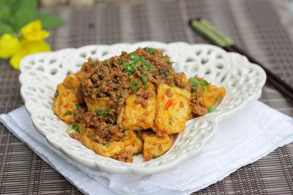

Nguyên liệu:
- 2-3 bìa đậu phụ
- 200g thịt nạc băm
- Muối, hành lá, tỏi, gừng, đường, dầu hào, xì dầu, hạt nêm, nước mắm, hạt tiêu
- Ớt sa tế.
Cách làm:
Bước 1:
- Đậu phụ rửa sạch, cắt quân cờ vừa ăn
- Đun nóng nồi nhỏ, cho đậu phụ vào rán vàng, vớt ra đĩa có lót giấy thấm dầu ăn. Để đơn giản bạn có thể mua đậu phụ rán sẵn.
Bước 2:
- Gừng rửa sạch, cạo vỏ, giã nhuyễn cùng với tỏi.
- Thịt nạc băm đổ ra bát, cho vào bát thịt nửa thìa nhỏ muối, một ít hạt tiêu, một thìa nhỏ nước mắm, trộn đều, ướp khoảng 15 phút.
Bước 3:
- Đun nóng một ít màu dầu điều, phi tỏi, gừng thơm.
Bước 4:
- Cho thịt vào xào chín, đổ thịt ra bát để riêng
Bước 5:
- Dùng lại chảo đó, thêm vào một thìa canh xì dầu, hai thìa canh nước lọc, hai thìa nhỏ đường, ớt sa tế (bạn có thể điều chỉnh lượng ớt tùy theo thích ăn cay nhiều hay ít), đun sôi.
Bước 6:
- Cho tiếp đậu phụ đã rán vào đun cùng, dùng đũa đảo đều.
Cho bát thịt đã xào ở bước 4 vào, nêm vào một ít dầu hào, tiếp tục đun đến khi phần nước sốt bám đều quanh miếng thịt và đậu phụ, nêm nếm lại gia vị tùy theo sở thích của bạn.
Bước 8:
- Tắt bếp, rắc một ít hành lá thái nhỏ vào, múc ra đĩa dùng làm món mặn ăn với cơm.